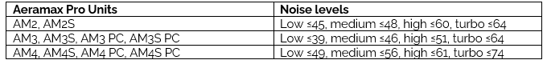
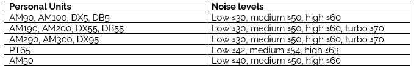
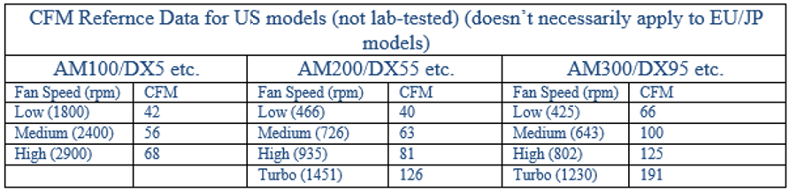
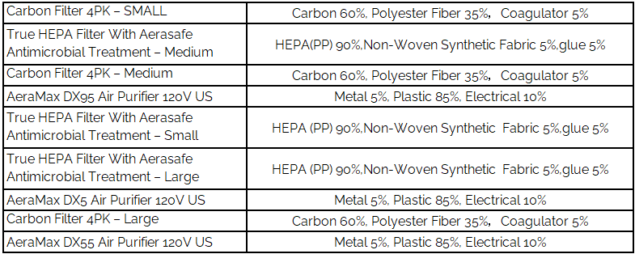
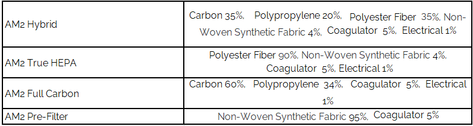
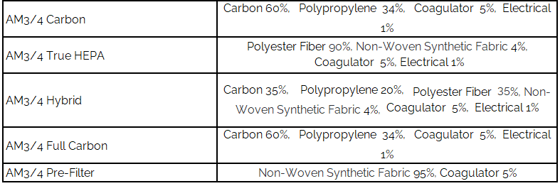

We're Here to Help
Below you'll find answers to the questions we get asked the most about our air purifiers or air purification.
Don't See the Question You're Looking For?
Click here to get in touch with customer service and we'll do our best to get you the answer to any question.
Contact UsCan AeraMax Pro capture SARS-Cov-2 (The virus that causes Covid-19?)
Yes! Our Fellowes AeraMax Pro AM3 & AM4 air purifiers demonstrated, through independent laboratory testing, to be effective in eliminating aerosolized concentration of SARS-CoV-2 by 99.9999% through a single air pass test of the purifier.
In addition, AeraMax Pro air purifiers reached 99.99% airborne reduction of a surrogate Human Coronavirus 229E in a 20m3 test chamber within 1 hour of operation in a separate test.
In addition, AeraMax Pro air purifiers:
- Are also certified to be effective in reducing airborne concentrations of influenza A(H1N1) aerosol in a test chamber, reaching 99.9% airborne virus reduction within the first 35 minutes of operation
- Certified to capture 99.97% of pollutants at 0.3 microns
- Captures more than 97.8% of pollutants at 0.1-0.15 microns, via IBR Laboratories test data
How loud/what are the noise levels of AeraMax machines?
Aeramax Pro: Both the AM3 and AM4 have 4 settings. The sound levels (dB) vary at each setting. For the AM3 the levels are 39, 46, 51 and 64. The AM4 sound levels (dB) are 49, 56, 61 and 74.

As a reference, many hand dryers sound pressure levels exceed 100 (dB), with averages around 80+ (dB). AeraMax Pro can be set to "quiet mode" and will run at or below the ambient sound level of the room in which it is installed.

How does the PlasmaTRUE™ bipolar ionizer help clean the air?
For both Aeramax Pro and Personal units:
The PlasmaTrue™ bipolar ionizer produces clusters of positive and negative (bipolar) ions. These charged ions are dispersed into the air, and electrically charge airborne particles so that they attach to nearby surfaces and to one another and settle faster. Charging and clustering airborne particles, enhances removal by filtration. Also, the ions react with oxygen and water vapor present in the air to create free radicals. The free radicals, in turn, can create chemical changes.
For example, they damage microorganisms (e.g., bacteria, viruses, and molds) and break down odors and VOCs.
SOURCE: "Indoor Air Purification Technologies that Allow Reduced Outdoor Air Intake Rates While Maintaining Acceptable Levels of Indoor Air Quality" Cecilia Arzbaecher and Patricia Hurtado, Global Energy Partners, LLC Ammi Amarnath , Electric Power Research Institute
Does the PlasmaTrueTM bipolar ionizer generate ozone?
Air purifiers, like many other products (computers, monitors, copiers, ceiling fans, and more) have a normal "ozone byproduct." An acceptable level for ozone byproduct has been set in the Code of Federal Regulations (CFR) at a maximum 50 parts per billion (ppb). All air purifying devices must pass Underwriter Laboratories (UL) 867*.
In July 2013, Underwriter Laboratories conducted UL 867 testing procedures to determine the level of ozone byproduct generation by the PlasmaTRUE™ bipolar ionizer used in AeraMax Pro purifiers. The highest level of ozone generation observed during testing was 4.0 ppb (acceptable level for ozone is up to 50.0 ppb).
For reference, the Environmental Protection Agency developed the Air Quality Index for Ozone to give guidance to state and local air quality forecasters to assist in issuing Air Quality Index forecasts. The levels are:
- 0 – 50 ppb: Good
- 51 – 100 ppb:Moderate
- 101 – 150 ppb: Unhealthy for Sensitive Groups
- 151 – 200 ppb: Unhealthy
- 201 – 300 ppb: Very unhealthy
Cities like Houston, TX and Los Angeles, CA can have indexes of 80 to 100 ppb at different times of the year.
Note that AeraMax Personal units ship with PlasmaTrue ON; AeraMax Pro units ship with PlasmaTrue OFF. The PlasmaTrue™ feature can be turned off by pressing and holding the icon until the light turns off.
* This standard for acceptable levels of ozone byproduct is found in section 21:801.415 of the Code of Federal Regulations (CFR) and Underwriters Laboratory (UL) standard 867.
Does my air purifier produce Ozone?
For AeraMax Personal units: The AeraMax™ DX5/DX55/DX95 Air Purifier does not create harmful ozone. The Environmental Protection Agency has National Ambient Air Quality Standards for pollutants considered harmful to public health and the environment. These standards provide public health protection, including protecting the health of "sensitive" populations such as asthmatics, children and the elderly. The AeraMax™ DX5/DX55/DX95 Air Purifier generates ozone far below the standard set by the EPA. In addition, the AeraMax™ DX5/DX55/DX95 Air Purifier is UL certified, testing well below the UL specification for ozone.
Is PlasmaTrue™ Technology harmful?
No. The Environmental Protection Agency has National Ambient Air Quality Standards for pollutants considered harmful to public health and the environment. These standards provide public health protection, including protecting the health of "sensitive" populations such as asthmatics, children, and the elderly. The AeraMax™ DX5/DX55/DX95 Air Purifier generates ozone far below the standard set by the EPA. In addition, the AeraMax™ DX5/DX55/DX95 Air Purifier is UL certified, testing well below the UL specification for ozone.
What is PlasmaTrue™ Technology?
PlasmaTrue™ Technology creates an ionized field to help safely remove airborne pollutants.
How do I know if the PlasmaTrue™ Technology is working?
For both Aeramax Pro and Personal units:
The PlasmaTrue™ Icon on your indicator screen indicates that the PlasmaTrue™ Technology is active. There is no way for the human eye to see the effect of PlasmaTrue™. Most machines will also produce a bit of a high-pitched noise that comes from the machine when the PlasmaTrue technology is on (not 100% of the time).
Can I deactivate PlasmaTrue™?
Yes, the PlasmaTrue™ Technology feature on the all AeraMax™ Pro and personal Air Purifier units can be turned off by pressing and holding down on the PlasmaTrue™ icon on the touch screen display panel for approximately 5 seconds. The PlasmaTrue™ Technology indicator light will turn off, letting you know that the PlasmaTrue™ Technology feature on the machine is turned off. Please note that if you turn off the PlasmaTrue™ Technology feature, it may reduce the coverage area below the AHAM certified rating.
What is the difference between an ionizer and PlasmaTrue™ Technology?
For both Aeramax Pro and Personal units:
There is no difference between an ionizer and PlasmaTrue™ Technology. Ionizers use electrostatically charged plates to produce positively or negatively charged gas ions that particulate matter sticks to in an effect similar to static electricity. Some ionizers produce Ozone that can be harmful to your health; however, PlasmaTrue™ Technology has been tested and validated per the latest regulation to show that it does not generate harmful Ozone. The Environmental Protection Agency has National Ambient Air Quality Standards for pollutants considered harmful to public health and the environment. These standards provide public health protection, including protecting the health of "sensitive" populations such as asthmatics, children, and the elderly. All AeraMax™ Pro and personal Air Purifiers generates ozone far below the standard set by the EPA. In addition, All AeraMax™ Pro and personal Air Purifiers are UL certified, testing well below the UL specification for ozone.
What is the difference between an ozone generator and PlasmaTrue™ Technology?
Ozone generators are optimized to attract an extra oxygen ion to an O2 molecule, using either a corona discharge tube or UV light. PlasmaTrue™ Technology is an ionizer, which uses electrostatically charged plates to produce positively or negatively charged gas ions that particulate matter sticks to in an effect similar to static electricity. Some ionizers produce Ozone that can be harmful to your health; however; PlasmaTrue™ Technology has been tested and validated per the latest regulation to show that it does not generate harmful Ozone. The Environmental Protection Agency has National Ambient Air Quality Standards for pollutants considered harmful to public health and the environment. These standards provide public health protection, including protecting the health of "sensitive" populations such as asthmatics, children, and the elderly. All AeraMax™ Pro and personal Air Purifiers generate ozone far below the standard set by the EPA. In addition, all AeraMax™ Pro and personal Air Purifiers are UL certified, testing well below the UL specification for ozone.
How do I override the EnviroSmart™ technology?
AM3&4 PRO (non PC) - Gen 1: The below video outlines how to override the EnviroSmart™ Technology:
AM2, AM3&4 PRO PC, and all Personal Units - Gen 2: Has manual mode; press and hold manual icon for a few seconds until the light is illuminated to go into manual mode.
The AeraSmart™ Sensor Indicator Light never changes to amber or red. How do I know if the sensor works?
Blue indicates a low level of contaminants detected, amber indicates a moderate level of contaminants and red indicates a high level of contaminants. If the sensor light doesn't turn amber or red, perhaps the air around your unit is relatively clean.
Here are ways to test that the sensor is working properly:
AeraMax™ 90/100/DX5
- Your indoor air is probably clean with no pollutants in it. To verify, place a dry erase marker or hand sanitizer - or any other object emitting a strong smell such as a perfumed item close to the right side of the handle on the back of your air purifier.
- The AeraSmart™ Sensor, located to the right of the handle, will detect the odor after a few seconds and trigger the amber or red level of your AeraSmart™ Sensor Indicator Light.
- If this experiment does not work, verify that the bag has been removed from around your filters and conduct the above experiment again.
- If this still does not work, the AeraSmart™ Sensor of the unit is probably defective. Please call customer service. (Return product)
AeraMax™ 190/200/DX55/290/300/DX95 and all AeraMax PRO AM2/AM3/AM4 units
- Your indoor air is probably clean with no pollutants in it.
- To verify, place a dry erase marker - or another object emitting a strong smell such as a perfumed item close to the right side of the machine, by the Fan Speed Indicator.
- The AeraSmart™ Sensor, located on the right side of the air purifier, will detect the odor after a few seconds and trigger the amber or red level of your AeraSmart™ Sensor Indicator Light.
- If this experiment does not work, verify that the bag has been removed from around your filters and conduct the above experiment again.
- If this still does not work, the AeraSmart™ Sensor of the unit is probably defective. Please call customer service 1-800-477-7940. (Return product)
The AeraSmart™ Sensor Indicator Light is blue, but there is still some dust flying around.
For both Aeramax Pro and Personal units:
- Your indoor air is probably clean with no pollutants in it.
- Verify that the bag has been removed from around the filters.
- Verify that your filters are not excessively dirty.
How do I go back to the "Auto" mode?
For both Aeramax Pro and Personal units:
Press the "Auto" icon. The unit will beep and the Auto Icon will illuminate.
How do I adjust the speed of the fan?
AM3&4 PRO (non-PC) - Gen 1: You will need to override Auto Mode. The below video outlines how to override the EnviroSmart™ Technology:
AM2, AM3&4 PRO PC, and all Personal Units - Gen 2: Has manual mode; press and hold manual icon for a few seconds until the light is illuminated to go into manual mode.
If you want to adjust the fan speed manually (as opposed to letting it adjust automatically based on the quality of the air), you can press the Fan Icon to increase or decrease the speed of the fan. When in Turbo setting, pressing the Fan Icon will return the air purifier to the lowest fan speed setting.
What is Aera+™ Mode on my Personal Unit?
Aera+™ Mode is designed for peak allergy and cold and flu seasons. Our engineers have designed a specific algorithm that increases the air turnover rate by:
- AeraMax™ 90/100/DX5: 35%
- AeraMax™ 190/200/DX55/290/300/DX95: 50%
To remove even more allergens, viruses and germs from your indoor air, switch to Aera+™ mode by pressing the + icon. To return to auto operation, press the + icon once more to turn off.
How do I activate Aera+™ Mode on my Personal unit?
Press the + icon on the indicator screen. The unit will beep, and the icon will illuminate.
How do I turn off Aera+™ Mode?
Press the + icon on the indicator screen. The unit will beep, and the icon will turn off. The air purifier will automatically return to original Auto mode.
How much time should it take my air purifier to calibrate?
For both Aeramax Pro and Personal units:
For approximately the first 4 minutes after turning the unit on, the Auto icon will flash while the unit measures air quality.
What should I do if the lights on my screen keep blinking after 4 minutes?
For both Aeramax Pro and Personal units:
Wait for a few more minutes. If the lights do not stop blinking, call customer service 1-800-477-7940 for further assistance about the electronics or AeraSmart™ Sensor of your product.
My product won't turn on. The lights of my product won't go on.
AeraMax™ 90/100/DX5:
- Verify that the On (I) /Off (O) switch, located on the back of the machine, is switched to On (I).
- Verify it is plugged in.
- Verify that the power outlet works by trying a different appliance.
- Verify that the filter panel on the back of the machine is properly in place.
- If it still does not work, call customer service at 1-800-477-7940.
AeraMax™ 190/200/DX55/290/300/DX95:
- Verify that the On (I) /Off (O) switch, located on the back of the machine, is switched to On (I).
- Verify it is plugged in. Verify that the power outlet works by trying a different appliance.
- Verify that the filter drawer on the right side of the machine is properly in place.
- If it still does not work, call customer service at 1-800-477-7940.
AeraMax™ PRO AM2/AM3/AM4:
- Verify that the On (I) /Off (O) switch, located on the back of the machine, is switched to On (I).
- Verify it is plugged in.
- Verify that the power outlet works by trying a different appliance.
- Verify that the filter panel on the front of the machine is properly in place.
- If it still does not work, call customer service 1-800-477-7940.
How much energy do the systems consume?
Rated Power Watts (NA Units):
- AeraMax 100, 90, DX5, DB5 - 50W
- AeraMax 200, 190, DX55, DB55 - 62W
- AeraMax 300, 290, DX95 - 86W
- AeraMax Pro AM2 - 80W
- AeraMax Pro AM3 & AM3S - 109W
- AeraMax Pro AM4 & AM4S - 180W
- AeraMax Pro AM3 PC & AM3S PC - 70W
- AeraMax Pro AM4 PC & AM4S PC - 155W
Assuming the systems will run for 10 hours per day, 365 days a year (it is likely actual run-time will be less), the estimated annual power consumption for each unit is as follows:
- AM3 average estimated annual power consumption is 120.82 kWh. Using a $0.10 cost per kWh, the estimated annual cost for power, per unit, is $12.08.
- AM4 average estimated annual power consumption is 138.9 kWh. Using a $0.10 cost per kWh, the estimated annual cost for power, per unit, is $13.89.
- Actual cost of power consumption will vary based on usage and actual cost per kWh.
Also, the units are "intelligent" in that they use sensors to self-regulate their settings based on the room's occupancy and condition. This helps optimize air cleaning performance and energy efficiency.
What is Energy Star and what are the requirements for a product to be certified?
Fellowes® AeraMax™ 190/200/DX55/290/300/DX95 Air Purifiers have been tested and certified eco-friendly by Energy Star because they have been designed for a low power consumption and have a lower impact on the environment. In general, products carrying the Energy Star certification consume 20%-30% less energy than what is required by federal standards.
What are the power (amps) requirements for the machines?
Rated Current (Amps) NA Units:
- AeraMax 100, 90, DX5, DB5 - 0.42A
- AeraMax 200, 190, DX55, DB55 - 0.50A
- AeraMax 300, 290, DX95 - 0.70A
- AeraMax Pro AM2 - 1.37A
- AeraMax Pro AM3 & AM3S - 1.5A
- AeraMax Pro AM4 & AM4S - 2.0A
- AeraMax Pro AM3 PC & AM3S PC - 1.5A
- AeraMax Pro AM4 PC & AM4S PC - 2.0A
What is the ACH Rating?
ACH stands for :Air Changes per Hour: and is one of the least understood ratings on air purifiers. The ACH rating indicates how many times per hour and air purifying device can exchange the air within a room. For example, an ACH rating of 5x means that the full air volume is exchanged five times every hour.
All air purifiers display a Cubic Feet per Minute (CFM) number under the specifications. If you multiple the CFM by 60 (minutes per hour) and divide by 8 feet (average ceiling height). Then divide that total by the ACH rating, you'll end up with the maximum square footage number for the air purifier. .

Air changes per hour, or air change rate, abbreviated ACH or ACPH, is a measure of the air volume added to or removed from a space (normally a room or house) divided by the volume of the space. If the air in the space is either uniform or perfectly mixed, air changes per hour is a measure of how many times the air within a defined space is replaced.
What should I do if my air purifier creates interferences with my radio/TV when I plug it in?
For both Aeramax Pro and Personal units: It should not create interferences since the machine is FCC tested and certified. Verify that the interferences are not coming from another appliance or device. To do that, unplug the air purifier and verify if this stops the interferences. If it does, try to use your air purifier further away from the device on which you observe the interferences and on a different power outlet.
What are the electrical requirements for all units?
All wall mounted AM3/AM4 units need to be hard wired (don't require a dedicated line) while all stand versions (AM3S and AM4S) use a normal plug. Neither can do both (NA - Use AC 120V Only).
All personal units have a power cord (NA - Use AC 120V Only).
What is a True HEPA Filter?
A True HEPA (High-Efficiency Particulate Absorption) air filter is a filter that removes up to 99.97% of airborne particles as small as 0.3 microns. The Fellowes® AeraMax™ True HEPA Filters are also treated with AeraSafe™ Antimicrobial Treatment that prevents microbes from growing on the filters. The True HEPA filter is the thicker white filter.
What is a Carbon Filter?
A Carbon Filter is a pre-filter that captures the bigger particles to avoid clogging the True HEPA Filter. The Carbon Filter is designed to help remove large airborne particulates and odors from the air. The Carbon Filter is the thinner black filter.
How do I access the filters?
- AeraMax™ 90/100/DX5: The filter panel is located on the back of the air purifier. Compress the tab on the top of the panel, then pull the filter panel towards you. If your air purifier is on, you will notice that it will automatically shut off as you pull out the filter panel. Fellowes has designed this feature for your safety.
- AeraMax™ 190/200/DX55/290/300/DX95: The filter drawer is located on the right side the air purifier. Compress the tabs on both sides of the drawer and completely pull out the filter drawer. If your air purifier is on, you will notice that it will automatically shut off as you pull out the filter drawer. Fellowes has designed this feature for your safety.
- AeraMax™ PRO AM2: The filter panel is located on the front of the air purifier. Compress the tab on the top in the middle of the panel, then pull the filter panel towards you. If your air purifier is on, you will notice that it will automatically shut off as you pull out the filter panel. Fellowes has designed this feature for your safety.
- AeraMax™ PRO AM3/AM4: The filter panel is located on the front of the air purifier. Press the two latches on the front side of the panel, and the filter panel should pop open towards you. Ensure the latches are unlocked. If they are locked, insert the key into the keyhole on the right side of the unit and rotate counter-clockwise at one-quarter turn to unlock. If your air purifier is on, you will notice that it will automatically shut off as you pull out the filter panel. Fellowes has designed this feature for your safety.
What cleaning and maintenance is required for air quality control systems?
1. Follow guidance of the Filter Change Indicator lights. When the light is lit, you will need to replace the filters. Please see above on how to access the filters.
2. To clean the external housing as necessary wipe with a dry, soft cloth; for stains, use a warm, damp cloth. Do not use volatile fluids such as benzene, paint thinner, or scouring powder, as they may damage the unit surface. Clean intake and exhaust vents by wiping with a dry, soft cloth. For more information regarding maintenance consult the owner's manual.
How does the machine know when it's time to change the filters?
Fellowes® AeraMax™ Air Purifiers take into consideration the quality of the air they clean, as well as the period of time they are being used, in order to determine the amount of dirt and pollutants that have been captured on the filters. Once this amount has risen to a level where the efficiency of the product is about to start decreasing, the air purifier tells you it's time to replace the filters.
How do I change and dispose of my filters?
When replacing filters, place the used filter(s) directly into a plastic bag and seal tightly before placing in trash receptacle.
The below videos show how to change filters for the AeraMax Pro 3 and AeraMax Pro 4.
AeraMax 90/100/DX5
AeraMax 190/200/DX55 & 290/300/DX95
AeraMax Pro AM3
AeraMax Pro AM4
How often do the filters need to be replaced?
The replacement filter indicators will signal when to replace the HEPA filter(s) and/or carbon filter(s). The replacement period will vary depending on the hours of use and air quality. However, under normal operating conditions, filter life is estimated to be the following:
- True HEPA Filter with AeraSafe™ Antimicrobial Treatment has an estimated average filter life of 1 year
- Activated Carbon Filter with Pre-Filter has an estimated average filter life 3-6 months
- 2" HEPA filter: 2 years
- 2" carbon filter: 12 - 18 months
- Hybrid filter: 1 year
*All figures above vary depending on the cleanliness of your air and how frequently you use your unit.
Please note that the original HEPA filter shipped with the units should be replaced after 12 months.
Can I use another brand of filter, or private label filters in an AeraMax Pro?
Aeramax Pro units: No, the EnviroSmart™ sensor technology in an AeraMax Pro takes into consideration the type of filters loaded into the unit to optimize performance. Only certified AeraMax Pro filters can be read by the sensor technology. The unit will not run if its sensors do not detect the information located in certified AeraMax Pro filters.
Aeramax Personal units: No, it is essential to only use Fellowes® AeraMax™ filters, as other types of filters will not correctly fit into your product. Other types of filters will leave some air gaps in your product, through which dirty air will be able to pass without being filtered and cleaned. Using other types of filters will dramatically reduce the efficiency of your air purifier.
Can I wash/clean my existing filters and reuse?
No. Do not try to clean or wash your filters as you would send all the pollutants they captured back into the air. Simply replace your filters with new ones and dispose of the old, dirty filters.
What should I do if my filters look clean, but my machine tells me to replace them?
If your machine has been set up on Auto for several months and if your air has been perfectly clean, it is possible that the filters are still relatively clean when your Filter Indicator Lights tell you to replace them. However, the filters are cleaning particles down to 0.3 microns that are not visible to the human eye, therefore even if the filter looks clean it might contain a fairly large amount of very small particles and pollutants on its surface.
How do I turn the red HEPA and/or Carbon Filter Indicator Lights off? (Filter Indicator Light Reset)
- AeraMax™ 90/100/DX5: Make sure the filter panel is snapped into place.
- AeraMax™ 190/200/DX55/290/300/DX95: Make sure the filter drawer is securely closed.
- Make sure the air purifier is on.
- Locate the Filter Icons on the display panel.
- Press and hold the Filter Icons for 3-5 seconds until you hear a short beep. At this time, the HEPA Filter Icon will flash amber. Press the Filter Icon to alternate between the HEPA and Carbon indicator lights.
- Once the desired filter is illuminated, press and hold the Filter Icons for 3-5 seconds until you hear a short beep. The indicator light should turn off. Repeat this process for each filter as needed.
- AeraMax PRO AM2/AM3/AM4:
- When installing a new filter the unit will automatically detect the filter type but the user will have to manually reset the filter replacement indicators.
- To reset any of the filter replacement indicators, press and hold filter type button that was replaced (HEPA or Carbon) until the light turns off.
- Repeat for other filter types as needed. When replacing the hybrid filter, reset both the HEPA and carbon indicator lights.
What should I do if my Filter Indicator Lights stay on after I replace the filters?
Repeat the Filter Indicator Light Reset Instructions. If it does not resolve the problem, the electronics of the unit might be defective (PCB, software). (Return Product)
What is the difference between adsorption and absorption?
Absorption is the process in which a fluid is dissolved by a liquid or a solid (absorbent). Adsorption is the process in which atoms, ions or molecules from a substance (gas, liquid or dissolved solid) adhere to a surface of the adsorbent. When using "absorb", one can say that something moves inside an object. But in the case of "adsorb", something forms a layer on the surface of an object.
Activated carbon filters adsorb odor and volatile organic compounds.
Click here for more information.
How is the product different from filters in the existing HVAC today?
AeraMax Pro is designed to complement HVAC systems by filtering air at the source of the contaminant. Also, most HVAC systems do not utilize HEPA filtration, which captures airborne contaminants as small as 0.3 microns including viruses, bacteria, and other airborne contaminants. HVAC systems may not have activated carbon filters to remove odor and volatile organic compounds, or bipolar ionizers to reduce airborne contaminants.
Can I run my machine with only one of the filters?
Your machine has been designed to accommodate both Fellowes® True HEPA Filter with AeraSafe™ Antimicrobial Treatment and Fellowes® Carbon Filter. Using the machine with only one of those filters would dramatically reduce the efficiency of your air purifier and may result in abnormal air circulation noises, as the space left by the missing filter would allow part of your indoor air to circulate freely without being filtered.
Do I need to turn the unit off to change the filters?
For both Aeramax Pro and Personal units: No, the unit is designed to disable the fan when the filter panel/drawer is opened. Once the filter panel/drawer is re-inserted, the unit will return to the previous state of operation.
Where can I get replacement filters from?
Filter replacements are widely sold: check with your current supplier or on www.fellowes.com.
What happens if I don't change my filters?
Eventually, the filters will become clogged and the air flow going through the machine will be dramatically reduced, affecting the product's ability to properly clean the air. If there is no air flow through the product and there is an excessive amount of dirt, dust, and pollutants on the filters, the product will not be able to capture the pollutants and keep them on the filters. In this case, the pollutants may be released back into the air.
What does the AeraSafe™ Antimicrobial Treatment do?
It protects against the growth of bacteria on the True HEPA filter.
Which filter is the AeraSafe antimicrobial treatment on?
It is on the True HEPA Filter.
Are the filters covered under warranty?
No, they are not. Filters are consumable parts that wear under normal conditions.
What materials are used in the filters?



How often should I run my systems and at what setting?
For both Aeramax Pro and Personal units: If you are unsure how often to run your unit and at what settings, all our units have an Automatic Mode which will adjust as needed based on your environment. These intelligent sensors automatically adjust unit settings to optimize performance and energy efficiency.
What are the recommended installation positions to assure ADA compliance for protruding objects?
If installing an AeraMax Pro within a circulation path:
For rooms with at least 9' ceilings:
- High Installation: make sure the top of the unit is located 8" down from the ceiling.
- In this position, airflow circulates efficiently, filters can be changed, and the unit is above 80" clear headroom required for ADA compliance.
- Low Installation: make sure the bottom of the unit (leading edge) is at or below 27" from the finished floor.
For rooms with ceilings lower than 9':
- High Installation: units must be installed with at least an 8” clearance from the ceiling to assure airflow, and that filters can be changed. If in this position, the accessible route is reduced to less than 80” (nominal dimension) and a barrier to warn blind or visually impaired persons shall be provided.
- High Installation, but not in a circulation path: units can be installed at heights below 80” from the ceiling.
- Low Installation: make sure the bottom of the unit (leading edge) is at or below 27" from the finished floor.
For more information, visit ADA™'s Compliance page
Can I mount my air purifier on a wall?
Personal Units (AeraMax 100, 90, DX5, DB5, 200, 190, DX55, DB55, 300, 290, DX95) have not been designed to mount on walls.
Can air quality control systems be mounted on the ceiling?
No.
Where is the optimal placement of an AeraMax Pro/ Where is the best place to put my air purifier in a room?
Aeramax Pro: Units should be installed as close to the source of the contaminant as possible, where contaminated air can be drawn directly into the filtering system. Also, by placing the unit higher on the wall, close to the ceiling (always allow a minimum of 8" space from ceiling and top of unit) the unit's powerful exhaust can circulate purified air throughout the room. The best places have 1-2 feet of free space around the product to allow for air circulation. It is NOT recommended to put your air purifier close to direct heat, a vent, or a smell source (such as next to an air conditioner, a fireplace, a fan, etc.) The direct proximity of those could have an influence on the correct functioning of your unit's AeraSmart™ Sensor. See computational fluid dynamic simulations for further insight.
Aeramax Personal: Units should be placed as close to the source of the contaminant as possible, where contaminated air can be drawn directly into the filtering system. Acceptable places to put you air purifier include, next to a desk, in the corner of a room, etc. The best places have 1-2 feet of free space around the product to allow for air circulation. It is NOT recommended to put your air purifier close to direct heat, a vent or a smell source (such as next to an air conditioner, a fireplace, a fan, etc.) The direct proximity of those could have an influence on the correct functioning of your unit's AeraSmart™ Sensor.
Will a stand-alone room air conditioning unit interfere with the efficacy of the AeraMax Pro?
Any device that creates a strong air flow, such as an air conditioner, hand dryer, fan and HVAC system, can alter the projection of the purified air coming from the unit, as well as air being drawn into the system. Air flow can also be altered by cubicles, partitions, stalls, furnishings, half-walls, and other physical barriers and should all be considered when determining an installation location.
Which size do you recommend based on the square footage of my room/space?
Find your size wtih our Calculator Tool.
Recommended room size per unit:
- AeraMax 100, 90, DX5, DB5: 100-200 sq.ft
- AeraMax 200, 190, DX55, DB55: 200-400 sq.ft
- AeraMax 300, 290, DX95: 300-600 sq.ft
- AeraMax PRO AM2: 150-250 sq.ft
- AeraMax PRO AM3/AM3S/AM3 PC/AM3S PC: 300-550 sq.ft
- AeraMax PRO AM4/AM4S/AM4 PC/AM4S PC: 650-1100 sq.ft
Either the AM3 or AM4 can effectively be used depending on the type of room. Restrooms, break areas, and rooms with higher levels of contaminants should utilize the AM4 which provides higher flow rates. Conference rooms, lobby spaces, and other less used, less contaminated areas can be effectively maintained with lower flow rates provided by the AM3.
To estimate the coverage needed divide the hourly air delivery rate of the unit by the total cubic feet of the room. Ideally, you will want to exchange the room's air 5 or more times per hour. For example, the AM3 has an hourly air delivery rate of 13,200 cubic feet (220 cfm x 60), the AM4 is 26,400 (440 cfm x 60).
Can my air purifier clean a room that is bigger that the recommended square footage?
Yes, your air purifier can clean a bigger room, it will just take more time for it to clean a bigger room than a room for which it is rated. Also, multiple units can be used in the same space to increase square footage coverage.
Can I use my product in a wet area such as my bathroom or sauna?
For both AeraMax Pro and Personal units: Using the machine in a wet area might damage your filter and create a hazard of electric shock if the power cord or any of the electrical components of your product get in contact with water. It is not recommended to use this product in a humid or wet area.
Can I set up my air purifier against a wall?
AeraMax™ 190/200/DX55/290/300/DX95 and Pro Units AM2/AM3/AM4: Yes, the air intakes are located on each side of the unit and the air outtake is located on top of the unit, therefore placing the product against the wall won't affect its function.
AeraMax™ 90/100/DX5: It is not recommended to place the unit against a wall, as the air intake is located at the rear of the unit. This model will perform better if it is not placed up against a wall.
In addition, none of the air purifier Units produce heat or anything that could damage a wall surface. It is completely safe to place the products against a wall (except the AeraMax™ 90/100/DX5 which has the air intake located on the rear of the unit).
How do I get started?
See our quick start guides and videos below on how to get started with your new AeraMax Pro Air Purifier.
AeraMax Pro AM2 Air Purifier
AeraMax Pro AM3 PC/AM3S PC Air Purifier
AeraMax Pro AM3/AM3S Air Purifier
AeraMax Pro AM4/AM4S Air Purifier
AeraMax Pro AM4 PC/AM4S PC Air Purifier
Why is AeraMax Pro better suited for public and shared spaces compared to other purifiers?
AeraMax Pro has patented sensor technology that automatically adjusts the unit based on conditions in the room to optimize purification and energy efficiency. No monitoring by staff is required.
Systems also have a vandal resistant design. Controls and filters cannot be accessed without unlocking the unit. The purifier filters, housing, motor, and balanced fan are all commercial-grade to hold up to the rigors of public and shared spaces.
Are there any clinical studies demonstrating the effectiveness of the solution?
No. However, Fellowes is pursuing multiple means of demonstrating the efficacy of AeraMax Pro. Laboratory and clinical studies are options being explored.
What features on AeraMax Pro are patent pending?
The EnviroSmart™ sensor technology:
- For its ability to control fan speed and regulate the system's air-flow based on conditions in the room.
- Recognizes the type of AeraMax Pro filter that is installed in the unit and can adjust motor/fan speed accordingly to maintain consistent airflow rates.
- For ability to place unit into stand-by mode to reduce energy and extend life of filters.
Our indoor air quality is checked several times a year, and the air quality is good. Why would I need an AeraMax Pro?
Even the cleanest facilities can have multiple areas that are sources of constant contamination. Anywhere that people gather, airborne contaminants can be generated—and, unfortunately, shared. These areas include restrooms, classrooms, waiting areas, ambulatory care, day care and nursery facilities, cafeterias/break-rooms, common rooms, and crowded office cubicle areas. Many of these areas, such as restrooms and cafeterias, can also be constant sources of odor.
Can I use AeraMax Pro air purifiers to manage radon gas levels?
While the activated carbon filter in the unit can adsorb numerous gases, air quality control systems are not designed for, or intended for use in, mitigation of radon in a facility. Contact a radon mitigation specialist. National Radon Proficiency Program (NRPP) maintains lists of certified radon contractors, radon measurement service providers, and analytical laboratories.
I have mold, can AeraMax Pro help?
Not with the source of the mold. Consult a mold remediator. For more information, contact The National Association of Mold Remediators and Inspectors. However, AeraMax Professional utilizes a high efficiency particulate air (HEPA) filter, which captures airborne germs and allergens including mold spores that are drawn into the system.
What's AeraMax Protects?
AeraMax Protects is designed to help you get the most out of your AeraMax Pro air purifiers. Join AeraMax Protects and receive such benefits as a one-year extended warranty on all AeraMax Pro machines, filter change reminders to keep your air purifier running in top condition, and more.
I've joined AeraMax Protects, where can I find the assets?
Congratulations on joining AeraMax Protects! For your convenience, please find the assets for your use below: